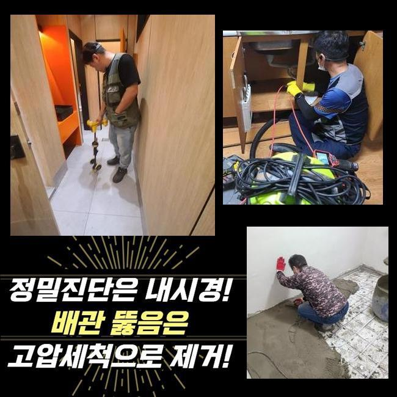
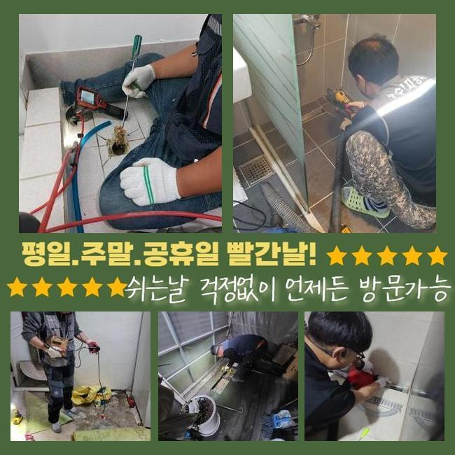
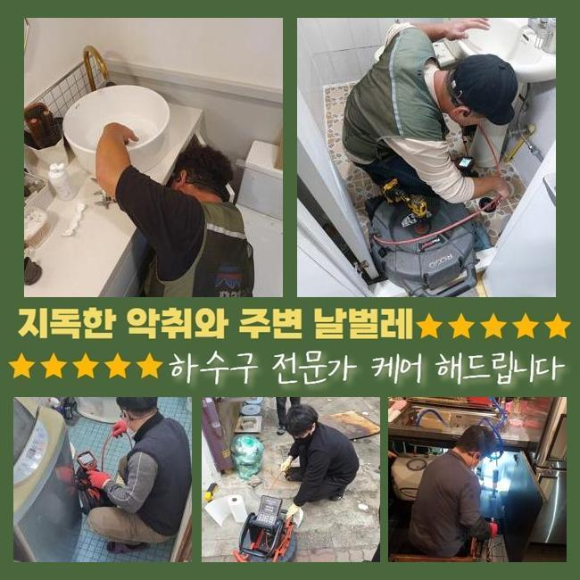
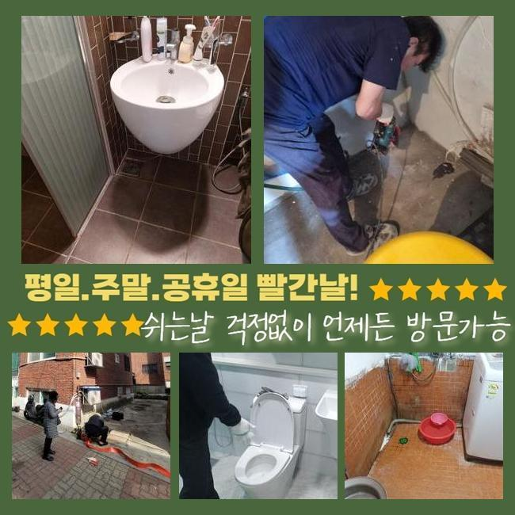
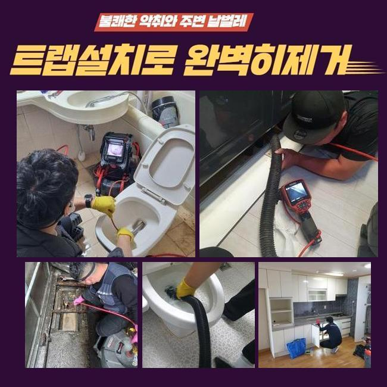
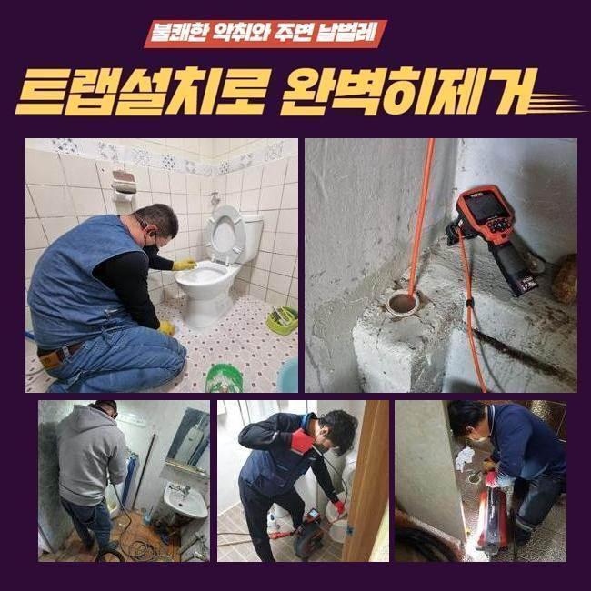
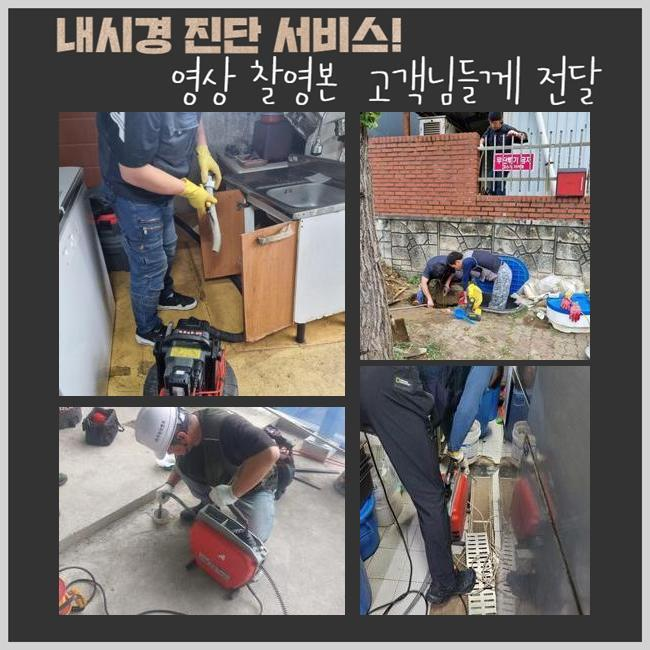

🏠 용인 신봉동변기역류 상현동 냄새차단 부속수리
용인 신봉동 변기막힘 전문 시공 후기

📋 작업 개요
- 위치: 용인 신봉동, 신봉동, 용인
- 서비스 유형: 변기막힘, 하수구막힘, 배관막힘, 역류해결, 뚫는업체, 배관청소, 고압세척, 설비공사, 악취차단
- 작업 일시: 2025. 1. 5. 11:05
- 업체명: 하수구수사대 (010-5615-2118)
🔍 문제 상황
용인 신봉동변기역류 상현동 냄새차단 부속수리
쉼의 공간이 되어야할 주거지에서 간헐적으로 생겨나는 트러블이 있답니다
그것중 한가지로 하수관막힘을 설명드리고자 해요
하수관이 차단되면 집안의 환경이 지저분해질수 있고 평상적인 생활의 괴로움을 가중하게 만들죠
관로의 막힘상황으로 욕실사용을 하지못하고 역류증세까지 보인다면 최악의 상황까지 치닫게 될것입니다
본 글에서는 쓰리룸빌라에서 생긴 세탁실배수 고장으로 여러가지의 장비류를 적용해서 정리한 공정을 설명드리려 해요
의뢰인분은 주방 바로 옆에 설치된 세탁기 배수관에서 배관고장이 생겼다면서 저희들에게 의뢰를 진행하셨는데요
차량안에 샤프트기기와 석션기기와 같은 것들을 챙긴후 고객세대로 이동하였습니다
방문하였더니 고린내가 가득차 있었으며 역류까지 되는 막힘문제를 관측할수 있었답니다
세탁버튼을 눌러서 배수하려고 시도했으나 반대로 넘쳐버리는 형국이 나타났다 설명하셨죠
버블만 역류된것이 아니고 크고작은 노폐물까지 방출되는 모습이었어요
특정 건물에선 주방시설과 세탁실의 관로가 통하는 상황도 볼수 있답니다
그것에 관계된 부분도 점검해보기로 했죠
사태를 분명하게 간파하기 위하여 의뢰인분에게 주방시설이나 기타 공간이 정체되었거나 역류상황은 없었는가 여쭈어보았죠

🔎 원인 분석
💡 전문가 진단: 정밀 진단 장비를 사용하여 슬러지의 고착 여부를 판명하고 타격/세척 작업을 실시했습니다.
몇주 전쯤 배수문제로 상점에서 구입한 뚫어뻥과 베이킹소다를 부어본적이 있다고 하셨죠
이에 따라 싱크공간과 관계된 배관에 막힘의 원인이 있을거라고 여겨졌어요
저희들이 방문한 지점의 정체를 정리하려고 증상을 찾아내기로 하였답니다
배관내시경카메라로 관로안을 검사해보기로 결정했죠
배수공이 차단되어 내시경마저 안들어갈땐 방수기능이 탑재된 청소기기로 하수관의 오물들을 처리하게 됩니다
이런 과정을 바탕으로 수리시간을 단축할수 있답니다
세정중 다양한 오물들과 찌꺼기들이 방출되었답니다
그러나 해당공정만으로는 근본적인 물막힘 사유가 어떤건지 밝히지는 못했죠
일차로 진행한 셕션기기로 처리못하는게 많았기에 즉시 배관내시경을 투입시켜 역류가 발발한 배수관을 관측하기로 했습니다
이물들을 면밀히 들어다보니 해변가에서 자주보는 흙과 모래같은 것들이었어요
빨래를 하는 과정에서 배출된 것들일 가망성이 높았죠
의뢰자께 휴가일정이 근래에 있으셨나 물었더니 부산쪽의 해안가에 갔다오셨다고 말하셨어요
우선 눈에보이는 이물들을 처리하고 좀더 실질적으로 뚫음시공을 속행하기로 했죠
그리고선 배수관 안쪽까지 소제가능한 장비들을 활용하기로 했어요

🔧 작업 과정
내시경카메라를 사용하는 건 막힘의 사유를 명확히 간파하고 체증을 해소하려는 목적인데요
흡입기계로 세척을 끝내고 가느다란 호스에 붙은 내시경cctv를 이용하여 관로 안을 진단해 보았습니다
심층부까지 진단해보았고 실체적으로 말썽이된 요소를 발견해낼수 있던거죠
이러하듯 관로막힘은 여러 변수에 의하여 나타나게 되며 정리방법이 간소한것도 아니에요
그렇기때문에 전문적인 기기들을 토대로 공정을 이어나가야 무난하게 끝마칠수 있는거죠
혹여 대강 막힘문제를 정리하려든다면 더더욱 고장이 증가할수 있단 것을 기억해주시길 당부드려요
배관 내부를 내시경cctv로 확인해보고 있어요
관의 기장은 생각한것보다 큰편이고 구성도 난삽하여 바로 이해하기에는 어려운 부분이 많습니다
그럴때 작은 내시경카메라가 확실한 기능을 수행할수가 있는거죠
내시경내시경cctv를 이용하여 하수관 안을 천천히 들여다보니 불규칙한 석회성분과 흙성분들이 뒤엉켜있는 모습이었습니다
이 슬러지들은 수용성이 아니라 바위와 같이 굳기 쉽죠
미미한 것들은 배수가 되어서 밖으로 배출되겠지만 동시에 모래알들이 관로로 투입된다면 이 지점처럼 체증이 가속화될수 있답니다
또한 그런 정황이 지속되면 단단한 이물질층이 생겨날수도 있는거고요
찌꺼기의 성질에따라서 이용하는 도구가 다릅니다
가령 손수건 등의 폐기물이 누증되어 있다면 쇠갈고리 등을 투입하여 끌어낸 다음 석션도구로 하수관 안쪽을 청소해야 됩니다
혹시라도 이러한 과정을 생략하고 곧바로 분쇄공정에 들어가면 하수관 내측이 한층더 혼잡해질수가 있는거죠
슬러지들이 더미형태로 많이 모여있다면 그것들을 작게 부수는 스케일링을 속행하는데요
이장소는 돌맹이들과 혼합되어 있어서 그것들을 샤프트로 제거하고 뚫어보기로 하였습니다
해당 현장에선 전체 이물들을 소제하고 내시경설비로 다시금 점검을 실시했어요
그후 잔류하는건 분쇄기기로 정결히 정비하고 곧바로 물내림 시험을 해보았는데요
다량의 물도 시원하게 사라지는걸 확인하였습니다
공사현장에서 토출된 지저분한 것들을 전반적으로 정리한뒤 분리폐기하는걸로 공사를 마감하였어요


✅ 작업 완료
이러한 막힘증세를 차단하려면 정기적으로 하수구 살펴보았고 청소해야 됩니다
주방설비쪽의 하수관에선 다양한 노폐물들이 막힘을 유발하고 역류까지 일으키는 경우가 허다하죠
그럴땐 지체하지말고 즉각적으로 기술자에게 의뢰하시는 편이 합당합니다
자체적으로 처리할수있는 방안은 본질적인 해결에 다가서기 어렵고 막힘상황이 한층 나빠지는 케이스도 자주 볼수 있어요
배관업체의 분쇄작업이나 고압세척은 간단하게 삶을 정상화시키는걸 넘어서서 위생상의 안전함을 담보하는데도 필수입니다
또 그문제가 지속된다면 타주민에게도 악영향을 가할수 있단걸 기억해두시길 당부드려요




⚠️ 하수구 배관 막힘 예방 및 관리 가이드
- ✅ 머리카락, 비닐, 물티슈 등 물에 분해되지 않는 이물질은 하수구 유입을 절대 금지해 주세요.
- ✅ 하수구 거름망을 씌우고 모여진 이물질은 주기적으로 쓰레기통에 바로 비워주셔야 합니다.
- ✅ 배관 노후가 심할 경우 이물질이 더 쉽게 걸리므로 주기적인 배관 세척(고압세척 등)을 권장합니다.
- ✅ 작업 후 1년 이내 재발 시 하수구수사대에서 무상 A/S 보증 서비스를 제공합니다.
💡 핵심 정리
- 확실한 장비 작업(내시경 점검 및 샤프트 스케일링)으로 원인을 뿌리 뽑습니다.
- 작업 후 1년 이내에 동일한 부위 재발 시 100% 무상 A/S 서비스를 보장합니다.
- 서울 · 경기 · 인천 전 지역에 24시간 언제든 긴급 출동할 수 있도록 항시 대기 중입니다.
❓ 자주 묻는 질문 (FAQ)
🚨 용인 신봉동 변기막힘 문제로 고민이신가요?
정확한 원인 진단과 확실한 시공으로 재발 없는 해결을 약속드립니다.
24시간 긴급 출동 | 서울 · 경기 · 인천 전지역 | 1년 내 재발 시 무상 A/S